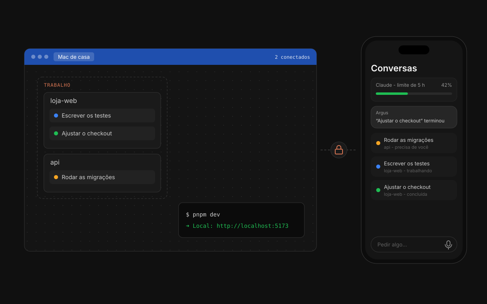

?Tutorial · Acesso remoto
Use o Argus de casa pelo notebook e pelo celular
Ligue o acesso remoto, pareie o aparelho e use o Argus de casa de longe.
Ajuda › Acesso remoto

1Ligue no computador de casa
Abra Configurações › Acesso remoto e ligue Permitir acesso. Deixe Manter este computador acordado ligado: dormindo, ele sai da internet e ninguém consegue acordá-lo de longe.
2Gere um código
Em Parear um aparelho, clique em Gerar código. O código vale por 10 minutos e para um aparelho só. Errou uma vez, ele deixa de valer.
3Conecte o notebook
No outro computador, também com o Argus instalado, abra Configurações › Acesso remoto › Conectar a outro Argus e digite o código. O Argus de casa abre numa janela, com a barra de cima azul.
4Ou conecte o celular
Aponte a câmera do celular para o QR code. O Argus abre no navegador; adicione à tela inicial para usar como um app e receber os avisos.
5Veja quem está dentro
A barra de cima do computador de casa mostra quantos aparelhos estão conectados, e o clique desconecta um ou todos. Em Aparelhos pareados, remova os que você não usa mais.